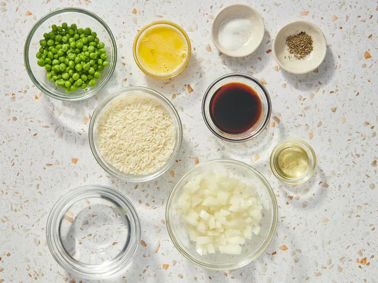
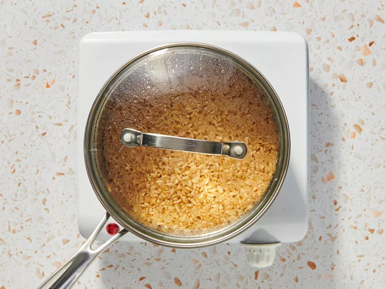
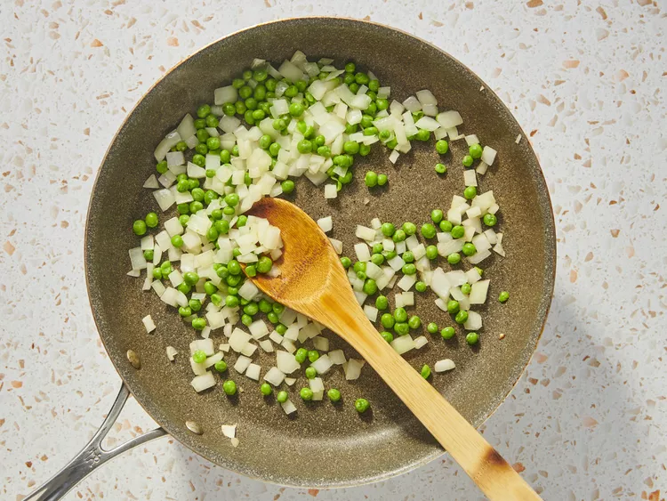
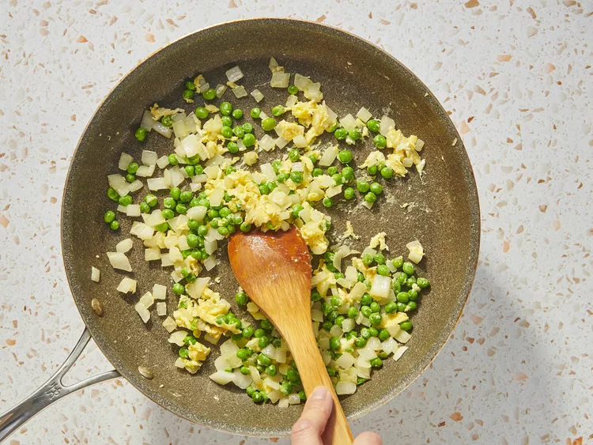
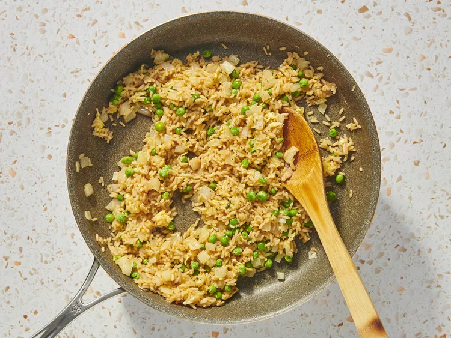

Egg Fried Rice

This egg fried rice is quick to make with instant rice. It's easy to customize with other vegetables or leftover roast meat.
ingredients
- 1 cup water
- 2 tablespoons soy sauce
- ½ teaspoon salt
- 1 cup uncooked instant rice
- 1 teaspoon vegetable oil
- ½ onion, finely chopped
- ½ cup sliced green beans or peas
- 1 large egg, lightly beaten
- ¼ teaspoon ground black pepper
Steps
- Gather all ingredients.

- Bring water, soy sauce, and salt to a boil in a medium saucepan. Stir in instant rice and remove from heat. Cover and let stand for 5 minutes.

- Heat oil in a medium skillet or wok over medium heat. Sauté onions and green beans or peas in hot oil for 2 to 3 minutes.

- Pour in beaten egg and fry for 2 minutes, scrambling egg while it cooks.

- Add cooked rice to egg mixture; mix well. Season with pepper.

Back to Home